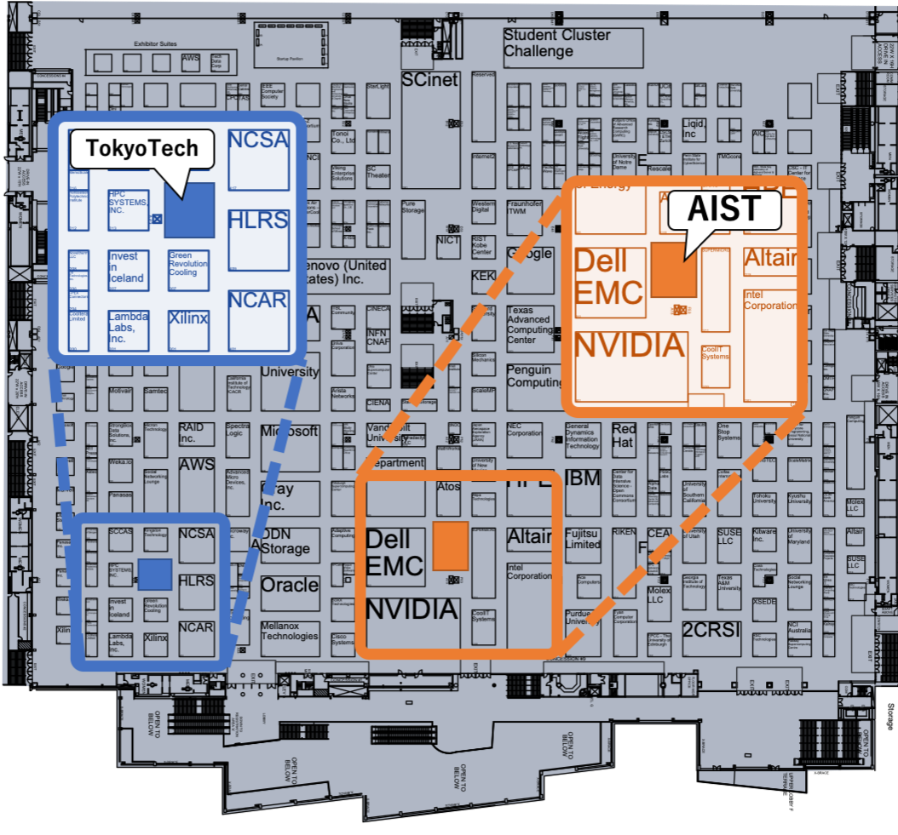

AIST started operation of ABCI, which is a publicly available cloud infrastructure for AI research and development, from August 2018, and RWBC-OIL uses ABCI for AI research. RWBC-OIL researchers from AIST and TokyoTech attend SC19 to provide presentation and booth exhibition about ABCI, AI/BigData research projects.
Highlights at SC19 is presentations of RWBC-OIL research activities that use ABCI and TSUBAME3.0. This year, three research papers and one poster from AIST and TokyoTech are presented. There are also many talks from RWBC-OIL researchers at BoF, panels, workshop and exhibition booths. We also present some of them at AIST booth #1117.
Same as last year's SC, we present ABCI at the booth. ABCI is an open innovation platform with world-class computing resources of 550 Pflops (HP) / 37 Pflops (DP) for AI research and development. The design of ABCI was impacted by the design of TSUBAME3.0 at TokyoTech. Further information about ABCI is available from ABCI web site. Information about TSUBAME3.0 is available from TokyoTech web site. You can reach the exhibition information about TokyoTech on this page.
AIST booth is at #1117
TokyoTech booth is at #313

HyperX Topology: First At-Scale Implementation and Comparison to the Fat-Tree
Jens Domke, Satoshi Matsuoka, Ivan Radanov Ivanov, Yuki Tsushima, Tomoya Yuki, Akihiro Nomura, Shin'ichi Miura, Nic McDonald, Dennis Lee Floyd, Nicolas Dubé
Date: Wednesday, 20 November 2019, 11am - 11:30am
Location:301-302-303
A Versatile Software Systolic Execution Model for GPU Memory Bound Kernels
Peng Chen, Mohamed Wahib, Shinichiro Takizawa, Ryousei Takano, Satoshi Matsuoka
Date: Wednesday, 20 November 2019, 4:30pm-5pm
Location: 405-406-407
iFDK: A Scalable Framework for Instant High-Resolution Image Reconstruction
Peng Chen, Mohamed Wahib, Shinichiro Takizawa, Ryousei Takano, Satoshi Matsuoka
Date: Thursday, 21 November 2019, 3:30pm - 4pm
Location:301-302-303
Poster 48: Runtime System for GPU-Based Hierarchical LU Factorization
Qianxiang Ma, Rio Yokota
Date: Thursday, 21 November 2019, 8:30am - 5pm
Location:E Concourse
Poster 96: TSQR on TensorCores
Hiroyuki Ootomo, Rio Yokota
Date: Thursday, 21 November 2019, 8:30am - 5pm
Location:E Concourse
Poster 111: Multiple HPC Environments-Aware Container Image Configuration for Bioinformatics Application
Kento Aoyama, Hiroki Watanabe, Masahito Ohue, Yutaka Akiyama
Date: Thursday, 21 November 2019, 8:30am - 5pm
Location:E Concourse
Early Career Program: Welcome and Leadership Panel/Discussion
Satoshi Matsuoka
Date: Monday, 18 November 2019, 8:30am - 10am
Location:709
Open Science in a Changing HPC Landscape
Satoshi Sekiguchi
Date: Wednesday, 20 November 2019, 1:30pm-3pm
Location:201-203
HPC Big Data and AI: Computing under Constraints
Satoshi Matsuoka
Date: Friday, 22 November 2019, 10:30am-12pm
Location:205-207
Energy Efficiency Considerations for HPC Procurements
Ryousei Takano
Date: TimeTuesday, 19 November 201912:15pm - 1:15pm
Location:601-603
On the Feasibility of Optical Circuit Switching for Distributed Deep Learning
Truong Thao Nguyen
Workshop: PHOTONICS
Date: Monday, 18 November 2019, 12:10pm - 12:30pm
Location:710
Panel: Rejuvenate Post-Moore's Law Information Systems with Photonics
Shu Namiki
Workshop: PHOTONICS
Date: Monday, 18 November 2019, 4:30pm - 5:30pm
Location:710
SAGE2 Session
Jason Haga, Maxine Brown
Date: Tuesday, 19 November 2019, 2pm - 3:30pm
ABCI Application Session
Gerald Pao, Kyoung-Sook Kim, Katsuki Fujisawa
Date: Tuesday, 19 November 2019, 4pm - 5pm
SAGE2 BoF Redo
Jason Haga, Maxine Brown
Date: Wednesday, 20 November 2019, 11am - 12pm